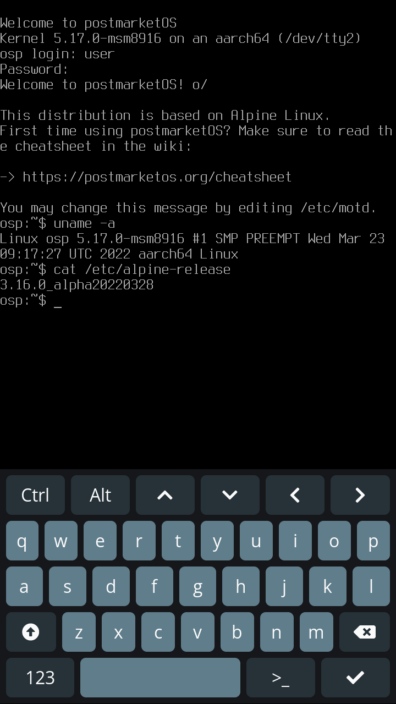

TTYescape
Contents
TTYescape - because mobile users can be hackers too
TTYescape is a collection of config files and a shell script enabling mobile users to escape the mortal limitations of "Desktop Environments" and "hardware acceleration", ascending to the one TRUE form of computer usage - the TTY.
[ Extract from pmaports!2309 ]
One of the largest limitations with a mobile device is the lack of keyboard, for mainstream OSs like Android and iOS, this is a non-issue as the whole OS stack is built to automatically recover in case of a crash / hang, hiding the internal state of affairs from users and making use of careful design to minimise the impact.
When bringing Linux to mobile, we carry not only the benefits of the Linux desktop but also it's limitations. In the event that your display manager goes haywire or hangs completely, or your graphics drivers get unhappy, the ability to quickly jump to a tty and start killing bad behaving programs or reset your display manager is one that most of us take for granted. But when hit by similar errors on a mobile device there is no such recourse available, users either have to reboot and hope that the issue doesn't occur again, or pull out a laptop and pull up a shell (assuming ssh is enabled and the rndis interface comes up).
Usage
TTYescape works by monitoring all input events on the system, if at any time you hold Volume Down and press Power three times you'll be quickly whisked away from the madness and dropped in TTY2.
"
But how will I type?
" you cry! "
for all I have is this pesky touchscreen
". Fear not dear user, for
fbkeyboard
is here to save you!
fbkeyboard is a tool for displaying a framebuffer keyboard on top of a TTY, it's both easy to use (simply tap the key you would like to press) and fun to look at with it's wonderful two-tone red and blue colour scheme.
Configuration
TTYescape is configured by editing the file
/etc/conf.d/ttyescape.conf
, currently it's possible to modify the font used in the TTY, adjust the number of times you have to press
Power
to switch to a TTY, and change the path to the tempfile used to count button presses.
Run
# echo 1 > /sys/class/graphics/fbcon/rotate_all
to rotate the screen 90 degrees counter clockwise and
# echo 3 > /sys/class/graphics/fbcon/rotate_all
to rotate the screen 90 degrees clockwise
Implementation
TTYEscape itself is a simple script, it makes use of
HKDM
, a tiny hotkey daemon which watches input devices with poll(), matches events to see if a certain command should be run and does so.
On pressing
Volume Down
the
togglevt.sh
script is run with the argument "start", this creates the tempfile
/tmp/ttyescape.tmp
with the contents "1", releasing
Volume Down
deletes the file. Pressing
Power
will run the script with the argument "inc", causing the number in the tempfile to be incremented. If the number is equal to the value
PRESSCOUNT
set in the config file (default: 3), the main body of the script is run, causing the user to switch TTYs, setting the font and launching buffyboard.
No services need to be restarted when editing the ttyescape config, it is only read by the togglevt script which is only executed on button presses.
TTYescape previously made use of
triggerhappy
, a relatively simple daemon capable of listening directly to input events and performing specific actions on certain keypresses (or combinations thereof). It also used fbkeyboard, both of these are in the process of being replaced for the newer HKDM and buffyboard (see links at the bottom of this page).
Security considerations
In order for this to work, both triggerhappy and the togglevt script must be run as root. It is important to ensure that their configuration files are only writable to root, otherwise it may be trivial for a user to gain root access via this tool. Absolutely zero security testing has been done on this tool, audit and use at your own discretion.
Potential improvements
There is a usecase not covered yet by TTYescape - that being when you display manager dies and your device / kernel goes with it. In this case you'd need to be able to boot directly to a TTY rather than switch to one, this could be implemented by starting a service before the main display manager, checking for specific key events and somehow preventing the display manager from starting, instead jumping to a TTY. This would be a fantastic future improvement.
Photos
| 
{kind=link}
See Also
- pmaports!2309 - Merge request to add TTYescape to pmaports.
- fbkeyboard - fbkeyboard source and docs
- triggerhappy - triggerhappy source and docs
- buffyboard - buffyboard source and docs
- HKDM - HKDM source and docs
- pmaports!2713 - Merge request to replace triggerhappy and fbkeyboard with hkdm and buffyboard
- pmaports#1314 - Issue tracking making TTYEscape installed by default on 21.12 stable